Formation initiale au réseau
darkgallium, 2019
Contrairement aux apparences, cette présentation n'est pas un cours.
Il se peut qu'elle contienne des imprécisions, des erreurs (que vous pouvez me signaler) et des blagues pas drôles !
Poursuivez à vos risques et périls...

The Opte Project, un projet de visualisation d'internet sous forme de carte.
Internet kékessé ?
C'est une interconnexion de réseaux hétérogènes.
Ces réseaux sont connectés entre eux par des routeurs qui acheminent les messages, subdivisés en paquets, d'un point à un autre du réseau.
Comment faire communiquer deux équipements à travers ce réseau immense ?
Du bon gros câble

Carte des câbles internet sous-marins
Des routeurs
Des protocoles, much protocoles
Un paquet ≈ une lettre.
Il doit contenir des infos qui puissent identifier l'expéditeur et le destinataire et un contenu, un message.
Tous les intermédiaires qui transportent le paquet doivent être capable de le lire et de l'envoyer sur la bonne route pour qu'il soit reçu.
Des protocoles, much protocoles
Ces protocoles et normes permettent que les éléments du réseau parlent tous la même langue et puissent transmettre, lire et construire des paquets.
Nous allons nous y intéresser dans les prochaines slides...
Les réseaux sont complexes et leurs usages évoluent rapidement.
Les concepteurs des protocoles utilisés sur les réseaux aujourd'hui l'avaient anticipé et ont conçu leurs protocoles de façon modulaire.
Chaque paquet est constitué d'un mille-feuille d'en-têtes de protocoles en dessous duquel se trouvent les données transportées.
Chaque couche gère un seul aspect du paquet (acheminement, vérification d'erreur, contenu...) en se reposant sur les autres couches pour gérer le reste.
La pile de protocoles dans un paquet
Pile de protocoles dans le modèle OSI (Open Systems Interconnection)
La pile de protocoles dans un paquet
Chaque protocole prend le résultat de la couche précédente et rajoute ses informations, on parle d'encapsulation.
Encapsulation dans un paquet UDP
Il était une fois un paquet...
La couche liaison
Cette couche contient les informations nécessaires pour acheminer les données entre deux voisins dans le réseau.
Elle contient principalement :
- Adresse MAC source
- Adresse MAC destination
Implémentations : Ethernet, 802.11 (Wi-Fi)
La couche réseau
Cette couche contient les informations nécessaires pour acheminer le paquet de l'hôte expéditeur à l'hôte de destination.
De quoi a-t-on besoin au minimum pour acheminer un message d'un point à un autre d'un réseau ?
On a besoin que chaque participant ait un identifiant unique, pour qu'on puisse lui adresser des messages.
Sur Internet, à chaque équipement est attribué une adresse IP, un identifiant sur 32 bits, écrit de la forme 192.168.1.1.
Cette adresse est l'information essentielle contenue dans la couche réseau, permettant aux intermédiaires réseau de diriger le paquet vers sa destination.
L'en-tête du protocole IP
- Adresse IP source et de destination.
- Un Time To Live (TTL) permettant de savoir par décomptage des hops si le paquet a été perdu.
- Un offset qui permet de gérer la fragmentation de paquets IP même si elle est assez peu utilisée.
- Un checksum pour vérifier l'intégrité du paquet, assez peu utilisé.
- Des flags représentant des options particulières.
La couche transport
Cette couche contient les informations nécessaire pour fournir une communication logique entre deux processus situés l'un sur la machine expéditrice et l'autre sur la machine destinataire.
Grâce à la couche IP, on peut acheminer un paquet d'un hôte à un autre, mais plusieurs processus peuvent envoyer/recevoir des paquets en même temps sur une même machine !
Comment savoir à quel processus le paquet est destiné ?
Chaque processus décide d'un numéro unique qui l'identifiera et tous les paquets mentionant ce numéro seront transférés à ce processus.
C'est le numéro de port, il se situe entre 1 et 65535.
Dans l'idéal, à un numéro de port correspond une application et/ou un usage.
En pratique, les programmeurs choisissent leurs numéros de ports au hasard ! (oh hi Fortnite!)
Quelques ports remarquables
| HTTP | 80 (TCP) |
| HTTPS | 443 (TCP) |
| SSH | 22 (TCP) |
| Minecraft | 25565 (TCP) |
| League Of Legends | 5000-5500 (UDP) |
TCP
Protocole fiable de la couche transport, fonctionnant en mode connecté.
Supporte la segmentation des paquets, garantit leur ordonnancement et dispose de mécaniques de gestion de la congestion (dont nous ne parlons pas ici).
Utilisations: web, ssh...
TCP : mécanisme d'acquittement
A chaque fois qu'il reçoit un paquet TCP, un hôte accuse réception en envoyant à l'expéditeur un paquet d'acquittement (ACK).
TCP : retransmission sur timeout
A chaque envoi d'un paquet, l'expéditeur lance un timer durant lequel il s'attend à reçevoir l'acquittement concernant le paquet.
S'il ne le reçoit pas dans le temps imparti, le paquet est retransmis.
TCP : numéros de séquence
TCP garantit que l'ordre des paquets est préservé.
TCP permet également de segmenter les messages. C'est-à-dire que si le message est trop gros pour tenir dans un seul paquet, TCP va le découper et produire plusieurs plus petits paquets que le destinataire remettra dans l'ordre.
Ces deux objectifs sont possibles car TCP numérote les paquets à l'aide d'un numéro de séquence.
TCP : numéro de séquence et d'ACK
L'information d'acquittement est transportée en même temps que les données (piggybacking).
Chaque en-tête TCP contient :
- Un numéro de séquence correspondant au numéro du premier octet de données transporté dans le paquet.
- Un numéro d'acquittement correspondant au numéro au prochain numéro de séquence attendu par l'expéditeur du paquet.
La magie TCP
TCP : retransmission sur ACK dupliqué
Si un paquet envoyé par Bob s'est perdu, le prochain paquet qu'Alice recevra aura un numéro d'ACK supérieur à celui attendu.
Dans ce cas, elle renverra un paquet avec le numéro d'ACK attendu (ACK dupliqué).
Au bout de 3 ACK dupliqués reçu, Bob réemettra le paquet qui s'est perdu.
TCP : retransmission sur ACK dupliqué
TCP : 3-way handshake
TCP est un protocole en mode connecté, il faut donc que deux hôtes établissent une connexion avant de pouvoir échanger des données.
Cette connexion permet de s'assurer que l'autre partie est prête à recevoir des données. Cela permet aussi de choisir (aléatoirement) de chaque côté le numéro de séquence initial.
TCP : 3-way handshake
L'en-tête du protocole TCP
- Ports source et de destination.
- Numéro de séquence du segment de données.
- Des indicateurs: urgent (URG), acquittement (ACK), synchro (SYN), fin de connexion (FIN), terminaison (RST)...
UDP
Protocole best effort de la couche transport, fonctionnant sans connexion.
Il gère la segmentation des paquets mais n'offre aucune garantie (intégrité, reception...).
Utilisations: VoIP, jeux...
L'en-tête du protocole UDP
La couche application
En dessous de tous les en-têtes que nous avons vu se trouvent les données envoyées par l'application.
Chaque application dispose de son propre protocole de communication que le développeur a défini.
Comment vérifier que je raconte pas de la merde depuis une demi-heure ?

Nous avons vu les différentes couches d'un paquet et les protocoles les plus connus qui les implémentent.
Comment les paquets franchissent-ils les réseaux et comment sont-ils dirigés vers la bonne destination ?
Les routeurs
La fonction principale d'un routeur est de connecter un réseau à un ou plusieurs autres réseaux et donc de permettre l'acheminement des paquets à travers ces réseaux.

Les routeurs
Lorsqu'un routeur reçoit un paquet depuis une interface d'entrée, il doit prendre une décision pour savoir vers quelle interface de sortie il l'envoie.
Pour cela il regarde l'adresse IP de destination du paquet et la compare à une table de routage qui fait correspondre une plage d'IP de destination à une interface de sortie.
Masque de sous-réseau
Il permet de distinguer dans l'adresse IP la partie réservée au routage (l'adresse du réseau) et la partie réservée à l'identification des hôtes.
192.168.1.1 avec un masque /24 (255.255.255.0)
Les 24 premiers bits de l'IP sont l'adresse du réseau, les 8 derniers forment l'adresse d'un hôte dans le réseau.
Masque de sous-réseau et routage
Le masque de sous réseau permet de déterminer si une IP est concernée ou non par une règle de routage.
$ ip route
default via 192.168.1.1 dev wlp2s0 proto dhcp metric 600
172.17.0.0/16 dev docker0 proto kernel scope link src 172.17.0.1
192.168.1.0/24 dev wlp2s0 proto kernel scope link src 192.168.1.2 metric 600
- Tous les paquets dont la destination commence par 192.168.1 seront envoyés à l'interface wlp2s0
- Tous les paquets dont la destination commence par 172.17 seront envoyés à l'interface docker0
- Tous les autres paquets seront envoyés par défaut via l'interface wlp2s0
En résumé...
Il existe deux types d'adresses IP...
- Les IP publiques, qui sont uniques sur Internet, routables et attribuées (c'est-à-dire vendues) par des organismes homologués par l'IANA.
- Les IP privées ou locales, qui ne sont utilisables que sur un réseau local, donc elles ne sont pas routables sur Internet.
Pourquoi deux types d'IP ?
Si chaque appareil utilisant internet possédait une IP unique, nous serions très rapidement en pénurie d'IP (au moins d'IPv4).
En plus, il se trouve qu'une IPv4 ... ça coûte assez cher (surtout depuis qu'on est véritablement en pénurie d'IPv4 !)
Comment faire cohabiter ces deux types d'IP ?
La RFC 1918 définit 3 plages d'IPv4 privées, qui ne sont pas routables sur Internet : 10.0.0.0/8, 172.16.0.0/12 et 192.168.0.0/16.
Toutes les autres IP sont des IP publiques attribuables par l'IANA.
Mais comment faire pour passer un paquet d'un réseau privé (IP source privée) vers un réseau public (IP de destination publique) ?
NAT
La solution c'est d'avoir une passerelle en bordure de réseau qui dispose d'une IP publique et qui remplace l'IP locale source par son IP publique dans chaque paquet avant de le router (translation d'adresse).
Pour que la passerelle puisse savoir à quelle machine du réseau local il faut qu'elle envoie un paquet en entrée, elle change également le port source de chaque paquet en sortie et tient une table de correspondance entre port source extérieur et IP et port de destination.
Protocoles de routage sur internet
Les routes sur internet ne sont pas fixées : les routeurs peuvent tomber en panne, le lien peut être physiquement coupé, de nouvelles routes se créent tous les jours...
Comme les tables de routage évoluent très souvent, il existe des protocoles spécifiques (BGP, OSPF) qui permettent aux routeurs importants d'internet de se parler entre eux et d'annoncer aux autres les régions d'internet qu'ils peuvent joindre.
Ces protocoles ne sont pas abordés dans cette présentation.
Mais dis donc Jamy, comment mon PC trouve-t-il quelle adresse IP il doit utiliser sur un réseau local ?
DHCP
DHCP est un protocole de la couche application (UDP, port 67 pour le serveur) qui permet de configurer automatiquement les paramètres réseau d'une machine.
DHCP
Lorsqu'une machine est connectée à un réseau en mode DHCP, elle envoie un paquet de demande d'IP en broadcast (via une adresse IP spéciale que tous les ordinateurs d'un réseau local écoutent, 255.255.255.255).
Le serveur DHCP, s'il existe et qu'il est disposé, envoie une offre d'IP à la machine qui a fait la demande.
La machine accepte ou refuse l'offre (sauf config spécifique, il accepte la première qu'il reçoit on va pas se mentir).
Revenons quelques instant sur les réseaux...
Comment créer plusieurs sous-réseaux logiques, virtuels à l'intérieur d'un même réseau physique ?
VLAN
C'est une fonctionalité permettant de créer plusieurs sous-réseaux logiques, virtuels à l'intérieur d'un même réseau physique.
Avec les VLAN, nous pouvons par exemple décider que le port 24 d'un switch donnera accès à un réseau virtuel n°103 dédié au wifi et que le port 1 donnera accès au réseau virtuel n°1 dédié au management et au réseau dédié au wifi...
Utilisation : séparation d'usages, séparation de privilèges...
VLAN
Ils fonctionnent grâce à un tag (VLAN ID entre 0 et 4095) spécial indiqué dans chaque paquet dans la couche liaison.
VLAN
Les équipements des utilisateurs lambda ne sont pas configurés pour tagger les paquets. Il faut donc faire en sorte que les switchs rajoutent le tag les paquets en provenance des ports sur lesquels se connectent les joueurs. On dit qu'on met le port en mode access ou untagged.
Les serveurs ou les équipements configurés pour peuvent dialoguer sur des VLAN particuliers lorsqu'ils y sont autorisés. On configure donc le port en mode trunk ou tagged dans le switch.
Quelques commandes utiles
ip addr : affiche l'adresse IP, le masque de sous-réseau de chaque interface de sa machine.
ip route : affiche la table de routage
ping : permet d'envoyer un paquet ping-pong à une machine (protocole ICMP) et affiche le temps total qu'à pris le paquet à faire son allez-retour.
Quelques commandes utiles
traceroute : commande permettant de retracer le chemin d'un paquet et d'afficher les routeurs par lesquels il est passé.
ss -tualpe : commande permettant de voir les ports utilisés par les applications sur une machine.
dhclient -v <interface> : faire une demande de bail de DHCP sur l'interface spécifiée.
Quelques références
- Formation réseau InsaLan, Nicolas Hurman et Quentin Dufour, 2013.
- Cours de réseau de troisième année.
- Articles Wikipédia de VLAN, DHCP, TCP, UDP, IP...